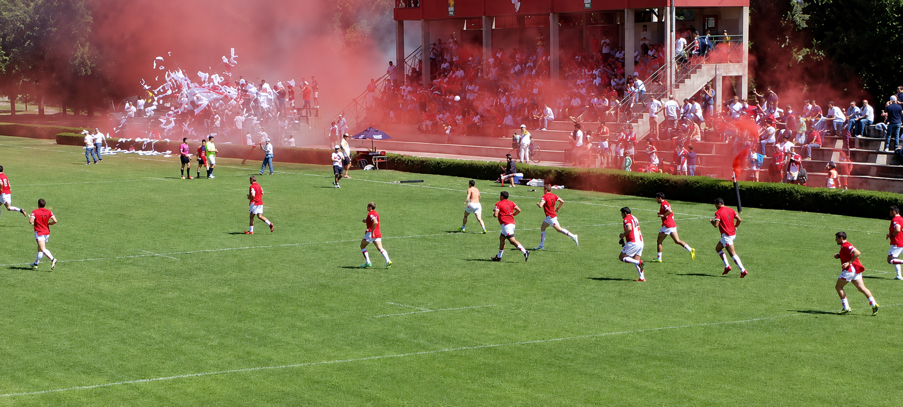

No es una sección. Es la experiencia que el club te debe. Cinco minutos. Encendé el sonido y bajá.

Es sábado, son las cuatro de la tarde, y en Limache empieza a pasar lo de siempre.
El redoblante de la murga arranca el pulso del estadio. Todavía no salieron los jugadores.
El cántico empieza atrás, en los populares, y avanza como una ola hasta llegar a la platea.
Cuatro bengalas, casi al unísono. El humo rojo se cuela en la cancha. El árbitro no puede tocar el silbato.
Los pibes, los viejos, los nuevos, los que vinieron una sola vez. Todos visten la misma camiseta.
Recorriste la web entera. Lo que sigue es venirte a la Cancha 1 un sábado. No hace falta entender de rugby — alcanza con dejarse llevar.